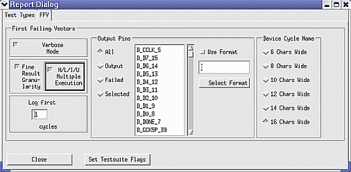

FFV tab settings
The figure below shows the Report Dialog window displaying the FFV (First Failing Vectors) page.

On this page, you can specify how first failing vector data will be included in the formatter output, when the output has been enabled with the FFV checkbox on the Test Types page of the Report Dialog window (see Settings for a functional test). If you want to switch between including all or only the failed output pins in the output, you must have activated both the Passed Pins and the Failed Pins checkboxes on the Test Types page.
For the Fine Result Granularity and H/L/I/U Multiple Execution options, see Fine result granularity.
At the bottom of the window, you find the two buttons Close and Set Testsuite Flags. They are explained in Close and Set Testsuite Flags buttons.
Functional changes
- Introduced before SmarTest 6.3.2